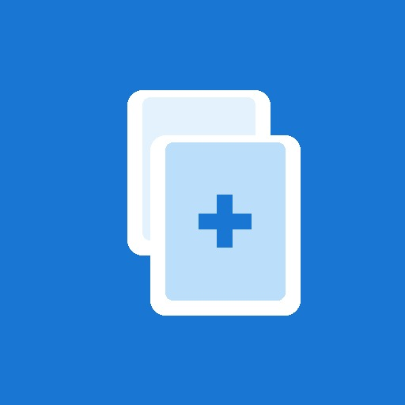
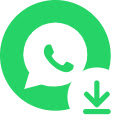
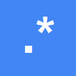

Business software
Reliable enterprise web systems, internal platforms, and data-driven workflows.
I’m Michael Guber, a Canada-based software developer and consultant. I turn complex workflows into reliable products — enterprise web systems, AI automation, Android apps, browser extensions, bots, and integrations.
Reliable enterprise web systems, internal platforms, and data-driven workflows.
AI-assisted processes, browser automation, bots, and system integrations.
Native Android apps in Java and Kotlin, Flutter apps, Chrome extensions, and Telegram and Gmail tools.
Focused utilities and self-hosted solutions for specialized operational needs.
Production business systems, a published Google Play app, multiple Chrome Web Store extensions, self-hosted tools, and open-source projects.
Have a workflow that should be simpler, faster, or automated? Let’s talk.
Get in touchNative Android apps in Java and Kotlin, Flutter apps, Chrome extensions, and Telegram and Gmail tools — including products published on Google Play and the Chrome Web Store.

Google Play
Chrome Web Store
Chrome Web StoreA curated view of all public, non-fork repositories on GitHub - from AI assistants and Chrome extensions to finance bots, Android utilities, automation tools, and legacy research archives. Repositories can belong to up to three categories.